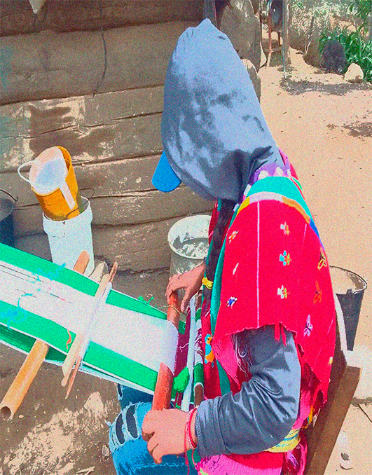

Museo de Textil
ORÍGENES DE LOS HABITANTES TRIQUIS
Los primeros habitantes triquis de este municipio son descendientes de indígenas que huyeron ante la llegada de los españoles a tierras aztecas. Fundaron su hogar en estas tierras, siendo tres hermanos fundamentales en su historia: Francisca, Juan y Martín.
LA ELABORACIÓN DEL HUIPIL
Con el paso del tiempo, las mujeres de la comunidad aprendieron a tejer el huipil, no solo como prenda para protegerse del frío, sino como una expresión cultural. Utilizaban lana de borrego y algodón teñidos con elementos naturales.
Hoy en día, se utilizan hilos de estambre y cristal en una amplia gama de colores, preservando la rica herencia cultural de la comunidad triqui mediante el telar de cintura.


Museo de Textil

Cecyteo Emsad Itunyoso

Cecyte Oaxaca